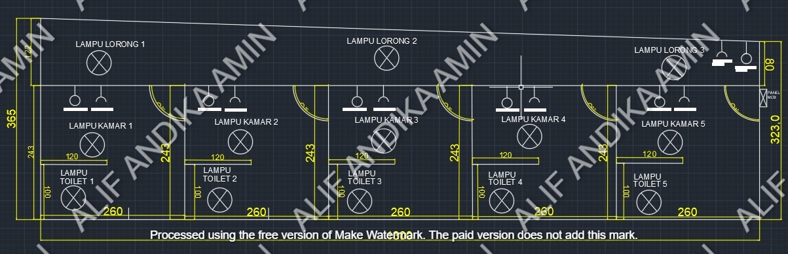
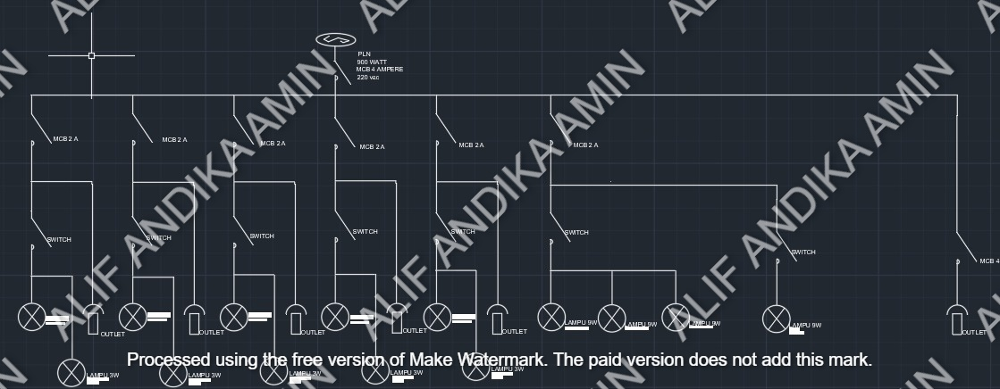

Layout dan Singgle Line Diagram untuk rumah Kos
Pada project ini saya membuat Layout tiap kamar dan ruangan beserta singgle line diagram untuk rumah kos yang berisi 5 kamar. Berikut adalah layout dari rumah kos :
1.Layout
Pada layout yang saya buat rumah kos ini memiliki 5 kamar, parkir motor, dan koridor. Setiap kamar memiliki 1 kamar mandi, terdapat 3 lampu pada koridor dan MCB terletak pada parkir motor
2.Single Line Diagram
Gambar dibawah merupakan diagram satu garis (Single Line Diagram) yang menunjukkan alur distribusi listrik dari sumber PLN menuju berbagai beban seperti lampu dan stop kontak (outlet) melalui MCB (Miniature Circuit Breaker) dan saklar sebagai proteksi dan kontrol. Sumber listrik berasal dari PLN dengan daya 900 watt, tegangan 220 volt, dan dilindungi MCB utama 4 Ampere. Setiap jalur dilengkapi MCB 2A yang mengalirkan arus ke saklar, kemudian ke satu atau beberapa lampu dan outlet. Diagram ini berfungsi untuk memberikan gambaran ringkas dan sistematis mengenai sistem instalasi listrik dalam bangunan, serta digunakan sebagai panduan dalam perencanaan atau pemasangan instalasi.
